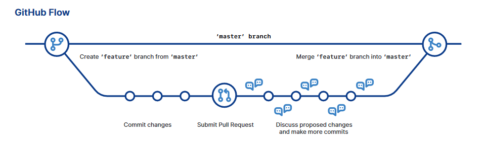
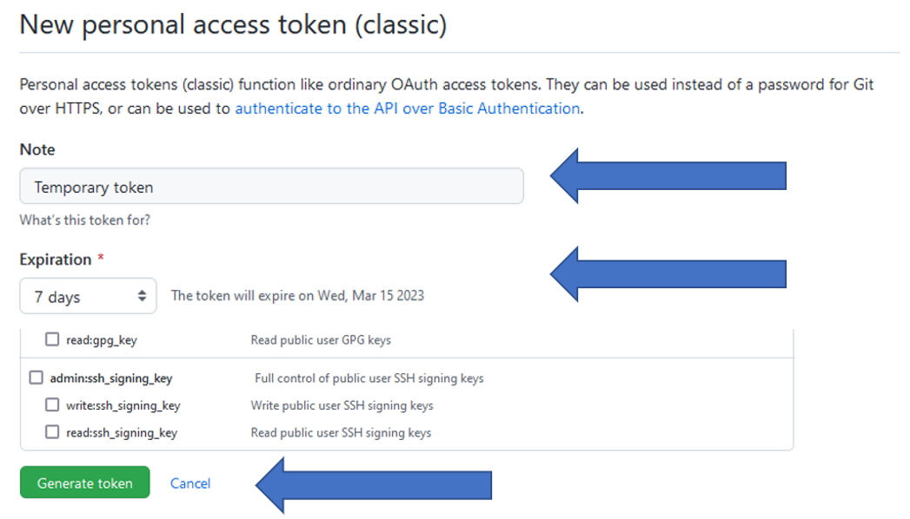
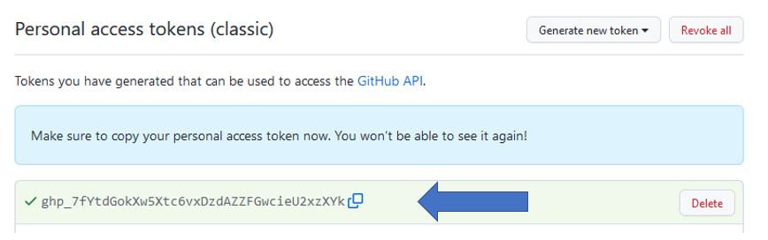
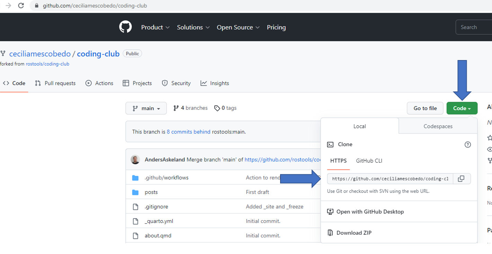
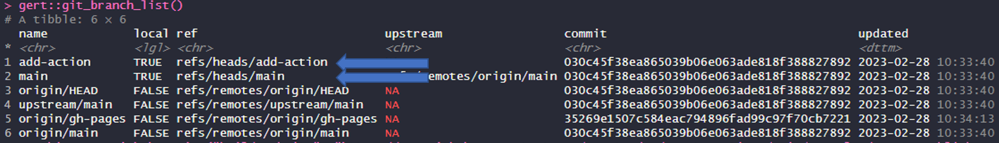
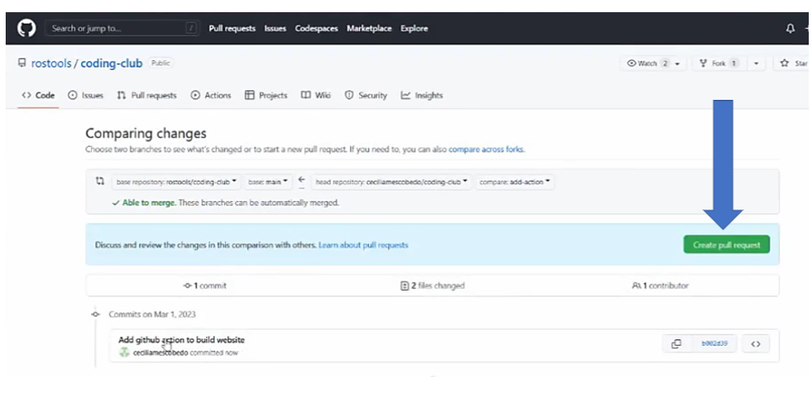
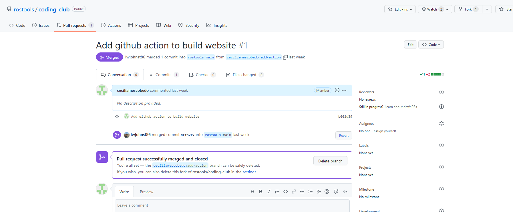

1 Introduction
In this post we will learn all about GitHub flow, making branches, and adding GitHub Actions.
In today’s tutorial, we will create a new branch for the coding-club website. We will create a blog entry post in this branch and demonstrate how to merge it with the main branch using a pull request to ensure that our blog post appears on the website.
But first, let’s define some concepts!
2 Defining Basic Concepts
2.1 Branches
A branch is a parallel version of a repository.
It is contained within the repository, but does not affect the primary or main branch allowing you to work freely without disrupting the “primary” version. Branches allow you to develop features, fix bugs, or safely experiment with new ideas in a contained area of your repository. When you’ve made changes you want to make, you can merge your branch back into the main branch (using pull request) to publish your changes and make it available for other users.
This feature can be especially useful in collaborative projects. For example, imagine you’re working on a project with a team, and you want to add a new feature to the code. Instead of making changes directly to the primary version, you can create a new branch and make changes there. This means you can experiment and work on the feature without affecting the primary version. Branching also allows one or more people to work on different parts of the code at the same time without interfering with each others work or without creating conflicting files.
In Git, branching is considered a lightweight process, meaning it’s quick and easy to create a new branch and switch between branches.
2.2 Pull request
Pull requests are proposed changes to a repository submitted by a user and accepted or rejected by a repository’s owner/collaborators.
2.3 GitHub Action
A GitHub Action is a clean environment that is located in a server and can run code from beginning to end. GitHub Actions is a platform that allows you to automate the build, test, and deployment pipeline. It allows you to also run any arbitrary code on your repository when a specific event happens on a GitHub repository. A GitHub Action can be breakdown into several components:
- Events: An event is anything that can happen on a GitHub repository. An event can be anything from pushing a code, creating a branch or building a complete website.
- Workflow: A workflow is an automated process composed of a series of jobs that gets executed when it’s triggered by an event. Workflows are defined in YAML files and are stored in the
.github/workflowsdirectory at the root of the repository. - Jobs: A job is a series of tasks that gets executed in a workflow upon being triggered by an event.
- Runners: Runners are processes on a server that run the workflow when it’s triggered.
- Actions: Actions are individual tasks that are called inside a job. Actions are used to perform complex tasks that you may call multiple times and import into your workflows.
For more information regarding GitHub Actions please visit: GitHub Actions
2.4 GitHub Flow
GitHub Flow is a branch-based workflow that is useful for collaborating in projects. GitHub Flow usually involves the following steps:
- Creating a new branch
- Making changes and adding the commits
- Creating a pull request
- Reviewing changes and accepting them
- Merging your pull request
- Deleting your branch
For more information regarding GitHub Flow please visit: GitHub Flow

3 Prerequisites
3.1 usethis setup
usethis is an R package that offers support for package development and GitHub workflows. It automates repetitive tasks that arise during a project setup and development. You can install it by typing install.packages("usethis") in your RStudio Console.
The usethis package will be especially helpful for its pull request helpers that will be shown in more detail down below.
For more information regarding these package please visit: usethis
3.2 Create a temporary token
A GitHub personal access token (PAT) is required to use usethis functions that create something in GitHub, such as a pull request. To get a personal access token type the following into your console:
usethis::create_github_token()If you’re signed into GitHub, usethis::create_github_token takes you to a pre-filled form to make a new PAT. Once there, describe the token’s purpose in the Note field, and change the expiration day to 90 days. Afterwards click Generate token at the bottom of the page. Note that you can also generate a temporary token directly in the GitHub page: GitHub Tokens

Once the token is generated, you will get a long string of characters (green section) as you can observe in Figure 3. Copy this token into your clipboard.

Go back to RStudio and type the following in the Console:
gitcreds::gitcreds_set()This will prompt you to enter your token, so just paste it!
Note: If you already have a stored credential, gitcreds::gitcreds_set() reveals this and will even let you inspect it. This helps you decide whether to keep the existing credential or replace it. In my case I choose the option that said “Replace this credentials.”
4 Forking and cloning
A fork can be defined as a personal copy of a repository in GitHub owned by a different user.
A clone is defined as a local version of a repository, including commits and branches. A clone is basically a copy of a repository that lives on your computer instead of on a website’s server somewhere. When you make a clone, you can edit the files and use Git to keep track of your changes without having to be online. The repository you cloned is still connected to the remote version so that you can push your local changes to the remote to keep them synced when you’re online.
Then, first step is to fork the source repository (in this case the website repository), to get our own copy on GitHub, and then clone that, to get our own local copy. To do this type the following in the R Studio console:
usethis::create_from_github("rostools/coding-club", fork = true)What this does is that:
It forks the
coding-clubrepository owned by rostools (Luke) into your own GitHub account.Clones the
coding-clubrepository into a folder named “coding-club” in your DesktopThe origin remote is set to my
coding-clubrepository (personal copy).Opens a new instance of RStudio in the
coding-clubproject, if you’re working in RStudio. Otherwise, switches your current R session to that project.
Does additional Git setup:
The upstream remote is set to the
coding-clubrepository owned byrostools(the original one).The master or main branch is set to track upstream/master or upstream/main, so you can pull upstream changes in the future.
In case the line above gives you an error, you can go to the following link where the cloning repository is located. In this case it was: https://github.com/ceciliamescobedo/coding-club. In the page:
- Click the code button and copy paste the URL link under the HTTPS tab. See Figure 4.
- Go back to R Studio. Click “File -> New project -> Version control -> Git -> Paste the URL -> Create new project”.
- In the Console type
gert::gert_remote_add ("https://github.com/rostools/coding-club.git", "upstream"). This will set therostools/coding-club(orginal repo) as the upstream.

5 Creating a new branch and making changes.
pr_init()creates a branch in our repository. Go to your R Console and type:
usethis::pr_init("add-action")This will create a branch called add-action and we switch to it.
Now we will be able to work locally, making changes to files and committing them to Git. We will use this branch to create a GitHub Action that will build up our coding-club website.
If you want to see the list of branches, go back to your R console and type:
gert::git_branch_list()After hitting enter you will be able to see the list of branches as shown in Figure 5.
The important branches are the ones that does not include origin or upstream in their name. In this case we have two branches that meet those requirements -> main which was the original branch and add-action which is the branch we created.

6 Using GitHub Actions
So now, let’s go ahead set up the infrastructure to create a website using GitHub Actions.
There are several Actions that you can directly copy-paste from Google.
In our case we searched for “quarto dev actions.”
Click on the first link (https://github.com/quarto-dev/quarto-actions) and go inside the folder named “examples.” Inside that folder open the .yml file named quarto-publish-example.yml. Click on the raw button and copy the URL on your clipboard (see Figure 6)
Go back to RStudio. Use the usethis::use_github_action() and paste the URL.
usethis::use_github_action("build-website", url = "https://raw.githubusercontent.com/quarto-dev/quarto-actions/main/examples/quarto-publish-example.yml")This line of code will create a new folder called .github, that can be access through the file pane in Rstudio.
- Open the
.githubthis folder. Go to theworkflowfolder and open thequarto-render-publish.ymlfile. - In the section named Set up Quarto change to
tinytex: false - Un-comment the section that is named Publish to GitHub Pages (and render) and delete the sections named Publish to Netlify and Publish to RStudio Connect (lines 22-38)
- Click Save
- Go to the Git pane (
Ctrl-Alt-M), stage everything in the Git folder and commit changes.
This steps will generate the website, push it to GitHub and build the website in GitHub.
7 Creating a pull request
Since we are done with the changes we wanted to make in our branch, we are ready to push our branch called add-action
usethis::pr_push()Note: Select the ‘origin’ option when the line prompts it.
pr_push() pushes the local changes we have made (specifically the branch add-action) to your copy of coding-club on GitHub (origin remote) and puts you in position to make your pull request.
This launches a browser window with the GitHub page, which looks like Figure 7.
- Click the create pull request button
Notice that in Figure 7 at top it says rostools/coding-club not Cecilia/coding-club.

7.1 Review of pull request, merge and finish.
The owner of the repository will accept the changes. This will merge it into the coding-club repository and we can start generating the website through that.

Once this is done we can use usethis::pr_pause(). This switches you from the branch called add-action to the branch called main.
8 Practice: Using the GitHub workflow to create a blog post in the website
In summary the GitHub Flow involves the following:
- Creating a branch
- Making changes
- Creating a pull request
- Reviewing pull request
- Merging and finish
So now let’s go ahead and create a blog post using this steps.
- Create a new branch using
usethis::pr_init("post-branches) - In this case the change will be creating a blog post.
- Go to “File -> New File-> Quarto Document”.
- Save this file in a new location. For this got to “File -> Save as -> coding-club -> posts -> Create new folder -> Call it
branches-actions”. - Open the Quarto Document and saved it as
index.qmd. Important: for all blog posts, the Quarto document should always be namedindex.qmdand the folder where it is stored should be the post title. - Copy the YAML from an old blog post and modify the post.
- Go to the Git pane and commit changes.
- Create a pull request.
- Go to you console and type
usethis::pr_push()and select option 1 to push to theorigin remote. - Click the pull request button on the GitHub window that opened.
- Go to you console and type
- Wait for the pull request to be reviewed.
- Merging will occur if changes are accepted. To finish with the pull request, type
usethis::pr_finish(). This line of code will close your branch. Note in case you want to resume your branch you can typeusethis::pr_resume()instead.